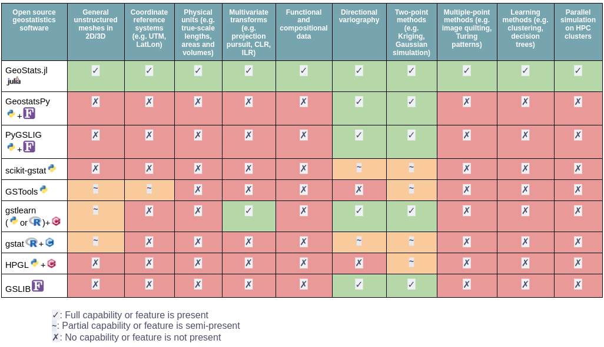

GeoStats — Module


GeoStats.jl is an extensible framework for geospatial data science and geostatistical modeling fully written in Julia. It is comprised of several modules for advanced geometric processing, state-of-the-art geostatistical algorithms and sophisticated visualization of geospatial data.
All further information is provided in the online documentation.
If you have found this software useful, please consider starring it on GitHub. This gives us an accurate lower bound of the (satisfied) user count.
Organizations using the framework:


Sponsors

Would like to become a sponsor? Press the sponsor button in our GitHub repository.
Overview
In many fields of science, such as mining engineering, hydrogeology, petroleum engineering, and environmental sciences, traditional statistical methods fail to provide unbiased estimates of resources due to the presence of geospatial association. Geostatistics (a.k.a. geospatial statistics) is the branch of statistics developed to overcome this limitation. Particularly, it is the branch that takes geospatial coordinates of data into account. Some major highlights of GeoStats.jl are:
- It is simple: has a very short learning curve and requires writing minimal code 😌
- It is general: supports all types of geospatial domains, including unstructured meshes 👍
- It is native: fully written in Julia for maximum flexibility and performance 🚀
- Has an extensive library of algorithms from the geostatistics literature 📚
The following table generated on March 11, 2025 provides a general comparison with other software:

Our JuliaCon2021 talk provides an overview of geostatistical learning, which is one of the many geostatistical problems addressed by the framework:
Consider reading the Geospatial Data Science with Julia book before reading this documentation. If you have questions, or would like to brainstorm ideas, don't hesitate to start a topic in our community channel.

Installation
Get the latest stable release with Julia's package manager:
using Pkg
Pkg.add("GeoStats")Quick example
Below is an example of geostatistical interpolation of point data over a Cartesian grid with a Kriging model:
# load framework
using GeoStats
# load visualization backend
import CairoMakie as Mke
# attribute table
table = (; z=[1.,0.,1.])
# coordinates for each row
coord = [(25.,25.), (50.,75.), (75.,50.)]
# georeference data
geotable = georef(table, coord)
# interpolation domain
grid = CartesianGrid(100, 100)
# choose an interpolation model
model = Kriging(GaussianVariogram(range=35.))
# perform interpolation over grid
interp = geotable |> Interpolate(grid, model=model)
# visualize the solution
interp |> viewer
Project organization
The project is split into various packages:
| Package | Description |
|---|---|
| GeoStats.jl | Main package reexporting full stack of packages for geostatistics. |
| Meshes.jl | Computational geometry and advanced meshing algorithms. |
| CoordRefSystems.jl | Unitful coordinate reference systems. |
| CoordGridTransforms.jl | Coordinate transforms with offset grids. |
| GeoTables.jl | Geospatial tables compatible with the framework. |
| DataScienceTraits.jl | Traits for geospatial data science. |
| TableTransforms.jl | Transforms and pipelines with tabular data. |
| StatsLearnModels.jl | Statistical learning models for geospatial prediction. |
| GeoStatsBase.jl | Base package with core geostatistical definitions. |
| GeoStatsFunctions.jl | Geostatistical functions and related tools. |
| GeoStatsModels.jl | Geostatistical models for geospatial interpolation. |
| GeoStatsProcesses.jl | Geostatistical processes for geospatial simulation. |
| GeoStatsTransforms.jl | Geostatistical transforms for geospatial data. |
| GeoStatsValidation.jl | Geostatistical validation methods. |
Other packages can be installed separately for additional functionality:
| Package | Description |
|---|---|
| GeoIO.jl | Load/save geospatial tables in various formats. |
| GeoArtifacts.jl | Artifacts (e.g., datasets) for geospatial data science. |
| GeoStatsImages.jl | Training images for geostatistical simulation. |
| DrillHoles.jl | Desurvey/composite drillhole data. |
Citing the software
If you find this software useful in your work, please consider citing it:
@ARTICLE{Hoffimann2018,
title={GeoStats.jl – High-performance geostatistics in Julia},
author={Hoffimann, Júlio},
journal={Journal of Open Source Software},
publisher={The Open Journal},
volume={3},
pages={692},
number={24},
ISSN={2475-9066},
DOI={10.21105/joss.00692},
url={https://dx.doi.org/10.21105/joss.00692},
year={2018},
month={Apr}
}We ❤ to see our list of publications growing.
Contributors
This project would not be possible without the contributions of: